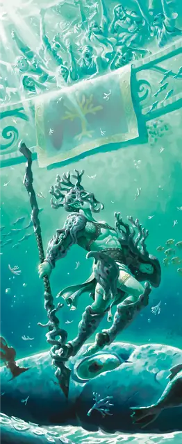

Гладиатор
Gladiator
Средний или Маленький Гуманоид, Нейтральный

Класс Защиты 16 Инициатива +5 (15)
Хиты 112 (15к8 + 45)
Скорость 30 футов
| мод | спас | ||
|---|---|---|---|
| СИЛ | 18 | +4 | +7 |
| ЛОВ | 15 | +2 | +5 |
| ТЕЛ | 16 | +3 | +6 |
| мод | спас | ||
|---|---|---|---|
| ИНТ | 10 | +0 | +0 |
| МДР | 12 | +1 | +4 |
| ХАР | 15 | +2 | +2 |
Чувства пассивное Восприятие 11
Языки Общий
Опасность 5 (1 800 опыта; БВ +3)
Действия
Мультиатака. Гладиатор совершает три атаки Копьём. Он может заменить одну из этих атак на использование Удара щитом.
Копьё. Бросок рукопашной или дальнобойной атаки: +7, досягаемость 5 фт. или дистанция 20/60 фт. Попадание: 11 (2к6 + 4) Колющего урона.
Удар щитом. Спасбросок Силы: Сл 15, одно видимое гладиатором существо в 5 футах. Провал: 9 (2к4 + 4) Дробящего урона. Если цель — существо Среднего размера или меньше, она Опрокидывается.
Реакции
Парирование. Условие: По гладиатору попадают броском рукопашной атакой, пока он держит оружие. Эффект: Гладиатор добавляет +3 к своему КЗ против этой атаки, что может привести к её промаху.
Бонус мастерства +3
Среда обитания Любая
Сокровища Личные, Оружейные
Гладиатор
Участник соревнований и профессиональный боец
Гладиаторы — профессиональные бойцы, которые сражаются друг с другом, чудовищами и другими соперниками, чтобы развлечь публику. Одни из них стараются победить, чтобы выжить, другие выступают ради острых ощущений. Но все гладиаторы знают, как важно поддерживать зрительский интерес. Совершите бросок по таблице «Представление гладиатора» для вдохновения или выберите сами разыгрываемую гладиатором сцену.
Представление гладиатора
| 1к6 | Во время поединка гладиатор... |
| 1 | Посвящает свою грядущую победу божеству, правителю, благородной возлюбленной или кому-то из толпы. |
| 2 | Выступает в образе какого-то чудовища, надевая плащ и маску. |
| 3 | Возносит хвалу достойному сопернику. |
| 4 | Заводит толпу зажигательной тематической песней. |
| 5 | Стремится взять трофей с врага. |
| 6 | Внемлет знамениям, прислушивается к советам толпы или присматривается к поведению животного. |